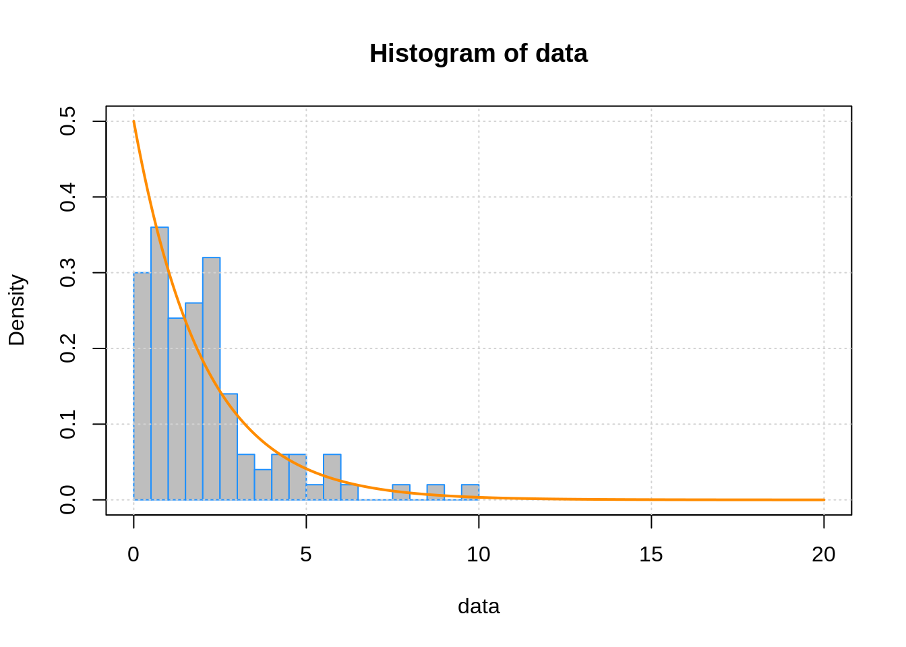
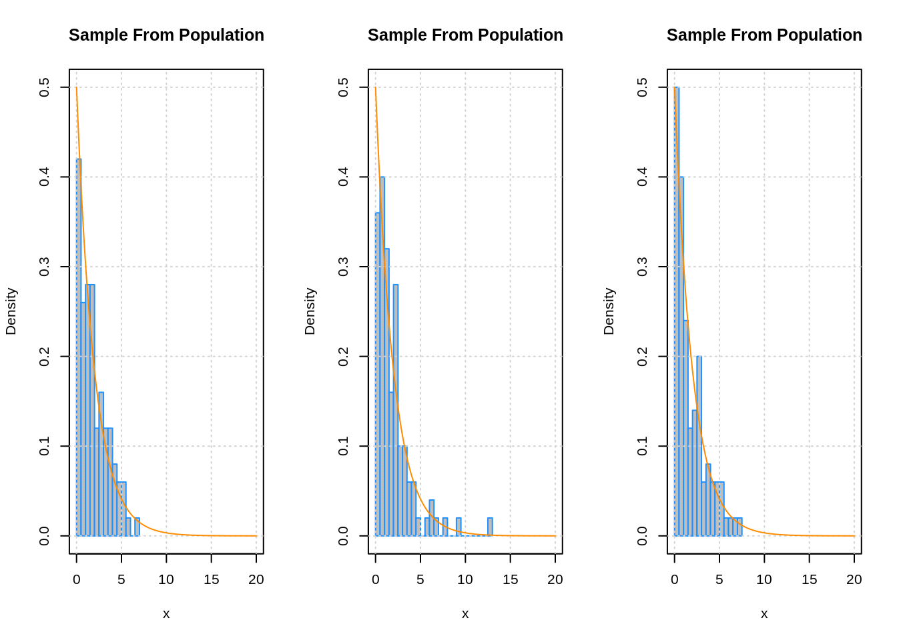
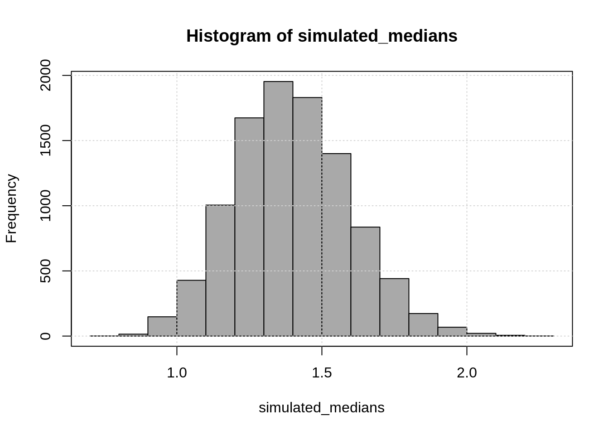
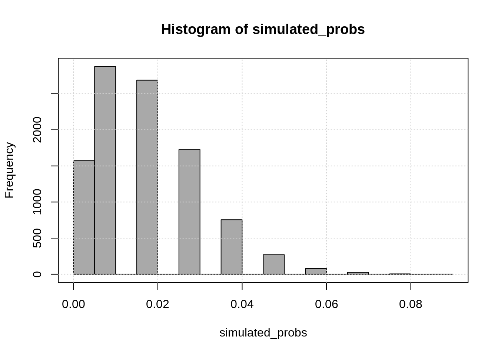
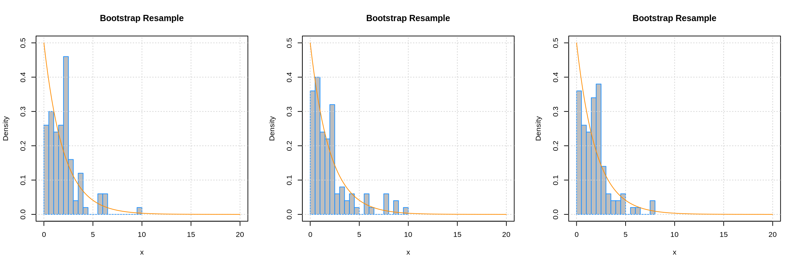

Chapter 19 Simulation and Bootstrap
19.1 STAT 432 Materials
Note: In the future this should become two chapters, and be greatly expanded. Perhaps introduce simulation, ECDF, and plug-in-principle very early.
## [1] 2## [1] 1.386294## [1] 0.01831564## [1] 2.061353## [1] 1.617539## [1] 0.02# histogram of data with population distribution
hist(data,
border = "dodgerblue", col = "grey", breaks = 20,
probability = TRUE, ylim = c(0, 0.5), xlim = c(0, 20))
box()
grid()
curve(dexp(x, rate = 0.5), add = TRUE, col = "darkorange", n = 250, lwd = 2)
# resampling from the true distribution
par(mfrow = c(1, 3))
hist(rexp(n = 100, rate = 0.5),
border = "dodgerblue", col = "grey", breaks = 20, probability = TRUE,
ylim = ylim, xlim = xlim,
main = "Sample From Population", xlab = "x")
box()
grid()
curve(dexp(x, rate = 0.5), add = TRUE, col = "darkorange")
hist(rexp(n = 100, rate = 0.5),
border = "dodgerblue", col = "grey", breaks = 20, probability = TRUE,
ylim = ylim, xlim = xlim,
main = "Sample From Population", xlab = "x")
box()
grid()
curve(dexp(x, rate = 0.5), add = TRUE, col = "darkorange")
hist(rexp(n = 100, rate = 0.5),
border = "dodgerblue", col = "grey", breaks = 20, probability = TRUE,
ylim = ylim, xlim = xlim,
main = "Sample From Population", xlab = "x")
box()
grid()
curve(dexp(x, rate = 0.5), add = TRUE, col = "darkorange")
## [1] 1.386294## [1] 1.617539# simulating medians
# - simulate from known distribution
# - calculate median on simualted data
# - store result
simulated_medians = replicate(n = 10000, median(rexp(n = 100, rate = 0.5)))# use EDCD and plug-in principle to learn about distribution and make estimates
mean(simulated_medians)## [1] 1.397316## [1] 0.1993581## 2.5% 97.5%
## 1.029307 1.807971
## [1] 0.01831564## [1] 0.02# simulating estimates of P[X > 8]
# - simulate from known distribution
# - calculate proportion of obs greater than 8 in simualted data, mean(I(x > 8))
# - store result
simulated_probs = replicate(n = 10000, mean(rexp(n = 100, rate = 0.5) > 8))# use EDCD and plug-in principle to learn about distribution and make estimates
mean(simulated_probs)## [1] 0.018517## [1] 0.01353547## 2.5% 97.5%
## 0.00 0.05
## [1] 0.29409198 4.35754514 5.51848758 2.47520710 0.89490379 2.21187254
## [7] 2.64093586 3.14397369 5.78993707 0.27959052 2.36328556 1.18923530
## [13] 2.78147026 0.41973316 1.52405971 4.56770695 3.56953081 1.62907161
## [19] 0.29141345 1.54837553 0.21214525 4.72903051 1.13173105 4.35754514
## [25] 1.95479161 0.26514281 2.15976227 2.36328556 0.70374100 0.60348187
## [31] 0.17934816 2.46758302 1.60834182 5.51848758 1.45042861 1.50308538
## [37] 0.52165649 6.43557804 1.54837553 1.18923530 1.15742493 9.66562549
## [43] 2.46758302 0.60256599 0.89490379 0.89490379 0.11852241 0.07453705
## [49] 4.20075446 1.07936568 2.04545175 3.56953081 0.11852241 0.77757354
## [55] 4.35754514 0.57118197 3.14397369 0.61889571 2.10908633 0.58824078
## [61] 1.45042861 1.28378518 1.54837553 7.91786570 0.47005490 1.17695944
## [67] 5.78993707 1.62907161 0.40702070 0.47005490 9.66562549 0.77757354
## [73] 1.02834859 1.17695944 2.15976227 1.67401298 0.11887832 0.70374100
## [79] 2.27366283 1.51036367 1.98911158 0.52165649 0.57118197 1.30949327
## [85] 2.50621071 1.54837553 2.04545175 2.47520710 2.78147026 0.21214525
## [91] 0.26514281 1.98911158 1.10928280 0.57118197 0.57118197 7.91786570
## [97] 0.57118197 7.91786570 1.62907161 3.14397369# bootstrap resample from original data
par(mfrow = c(1, 3))
hist(sample(x = data, replace = TRUE),
border = "dodgerblue", col = "grey", breaks = 20, probability = TRUE,
ylim = ylim, xlim = xlim,
main = "Bootstrap Resample", xlab = "x")
box()
grid()
curve(dexp(x, rate = 0.5), add = TRUE, col = "darkorange")
hist(sample(x = data, replace = TRUE),
border = "dodgerblue", col = "grey", breaks = 20, probability = TRUE,
ylim = ylim, xlim = xlim,
main = "Bootstrap Resample", xlab = "x")
box()
grid()
curve(dexp(x, rate = 0.5), add = TRUE, col = "darkorange")
hist(sample(x = data, replace = TRUE),
border = "dodgerblue", col = "grey", breaks = 20, probability = TRUE,
ylim = ylim, xlim = xlim,
main = "Bootstrap Resample", xlab = "x")
box()
grid()
curve(dexp(x, rate = 0.5), add = TRUE, col = "darkorange")
## [1] 1.386294## [1] 1.617539# boostrapping medians
# - sample with replacement from sample data
# - calculate median on resampled data
# - store result
replicated_medians = replicate(n = 10000, median(sample(data, replace = TRUE)))# use EDCD and plug-in principle to learn about distribution and make estimates
mean(replicated_medians)## [1] 1.626611## [1] 0.2100116## 2.5% 97.5%
## 1.189235 2.045452
## [1] 0.01831564## [1] 0.02# boostrapping mean(I(x > 8))
# - sample with replacement from sample data
# - calculate proportion of obs greater than 8 in simualted data, mean(I(x > 8))
# - store result
replicated_probs = replicate(n = 10000, mean(sample(data, replace = TRUE) > 8))# use EDCD and plug-in principle to learn about distribution and make estimates
mean(replicated_probs)## [1] 0.019998## [1] 0.01390249## 2.5% 97.5%
## 0.00 0.05
# sample from exponential with mean 2
# generate bootstrap replicates of the median
# calculate 95% confidence interval use percentile (quantile) method
# check if true median is in confidence interval each time (hope for ~95%!)
true_median = qexp(0.5, rate = 0.5) # mediancheck_if_in_interval = function() {
data = rexp(n = 100, rate = 0.5)
replicated_medians = replicate(n = 2000, median(sample(data, replace = TRUE)))
interval = quantile(replicated_medians, probs = c(0.025, 0.975))
interval[1] < true_median & true_median < interval[2]
}## [1] 0.925## Unit: milliseconds
## expr min lq mean median uq
## check_if_in_interval() 80.59274 87.10038 92.86923 92.61586 96.87218
## max neval
## 153.976 100